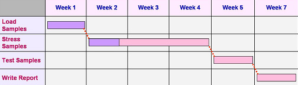

|
Gantt Chart
A
Gantt Chart
is a horizontal bar chart used in project management as a tool for
graphically representing the schedule of a set of specific activities or
tasks. The horizontal bars indicate the length of time allocated to each
activity, so the x-axis of a Gantt chart is subdivided into equal units
of time, e.g., days, weeks, months. The y-axis of a Gantt chart,
on the other hand, simply lists all the activities or tasks being
monitored by the Gantt chart. A simple look at a Gantt chart
should enable its user to determine which tasks take the longest time to
complete, which tasks are overlapping with each other, etc.
The Gantt chart was
developed as a production tool in 1917 by Henry L. Gantt (hence the name
'Gantt chart'), an American engineer and social scientist. It has
since been a popular and important scheduling tool used in almost all
industries. In fact, a multitude of Gantt chart generating
software may be found in the market today.
Gantt charts
are used for: 1) planning and scheduling projects; 2) assessing how long
it takes to complete a project and its component activities; 3) laying
out the order in which the activities or tasks will be carried out; 4)
managing inter-dependencies among the various activities or tasks; 5)
managing the resources (including manpower) needed to complete
simultaneous activities; 6) monitoring the progress of each activity;
and 7) facilitating recovery actions to keep delayed activities back on
track.
A Gantt chart
indicates the following: 1) durations and timelines of the listed
activities; 2) the target and actual completion dates of the activities;
3) the cost of each activity; 4) the person or group of persons
responsible for each activity; 4) milestones in the progress of the
project.
Since a Gantt
chart is a graphical tool, it employs symbols to represent various
information about a project. These symbols include: 1) the
task bar,
which is the horizontal bar used to indicate the duration of each
activity in the Gantt chart; 2) the
milestone
marker,
which denotes a major turning point in the project such as the release
of an approved budget or the launching of a new product; 3)
the link line,
which shows the relationship between two tasks, such as the fact that
one activity can only begin after another one is completed. The
task bar may filled with a different color indicating the proportion of
the task that has already been finished.
A Gantt chart
may also incorporate a 'Resources' column, which is simply an additional
column that identifies the people responsible for each activity.
It may also incorporate a 'Budget' section, which shows a vertical bar
chart presenting the target budget and actual costs incurred in
implementing the project.

Figure 1.
Example of a simple Gantt Chart
In the simple Gantt chart
example shown in Figure 1, note the
filling of the first two task bars which indicate the amount of work
already completed. Note as well the link lines indicating that the next
task can only start after the previous one has been completed. In real
Gantt charts, more information are indicated, including 'actual dates'
for the time lines and the people responsible for the tasks.
See Also:
Tree Diagram;
Matrix Diagram
HOME
Copyright
©
2005
EESemi.com.
All Rights Reserved.
|